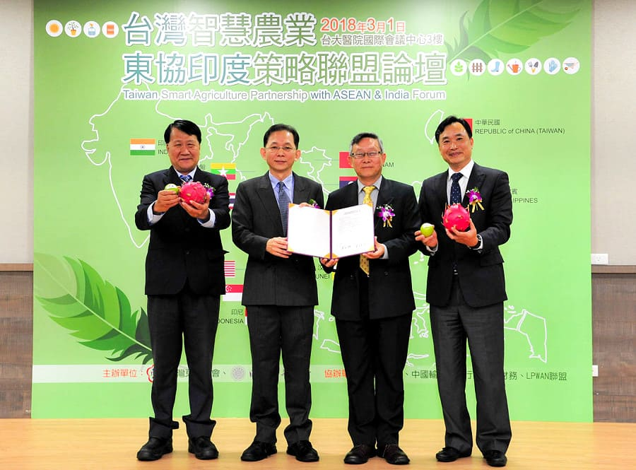

由清華大學電資學院、藝術學院組成的跨領域之研究中心「智慧物聯網與科技藝術應用研究中心」(Smart IoT and TechArt Applied Research Center，簡稱SIoTA)。
電資學院有研究實力堅強之智慧物聯網、人工智慧及大數據分析之研究團隊，扮演中心核心技術發展的角色；而藝術學院有豐富科技藝術與文創設計團隊，扮演讓科技與人文社會產生互動進而達到聚合性效應的角色。
本研究中心將專注在「物聯網智慧農業應用」、「智慧聯網技術」、「人工智慧大數據分析」、「科技藝術應用」四大研究領域，極具特色，將有助於推昇本院QS排名，社會回饋貢獻度以及提升產學合作成效。
希望能籌組一個建置與解決「i4SPACE-智慧創意生活空間」的智慧生活科技整合中心，充滿著智慧(intelligent)、無形(invisible)、資訊(informative)、互動(interactive)。
結合智慧科技與創新藝術，使得：
執行計畫預定之總體與分年目標
| 質化目標 | 第1年 | 第2年 | 第3年 | 第4年 | |
|---|---|---|---|---|---|
| 建立中心傑出團隊 | 建立傑出產學價值 | 建立傑出社會貢獻 | QS排名提前10名 | ||
| 量化目標 | 前25% IF論文或旗艦型國際會議論文 | 10-12 | 12-15 | 15-18 | 18-22 |
| 專利 | 4 | 6 | 8 | 10 | |
| 研討會受邀演講 | 12 | 12 | 15 | 15 | |
| 延攬/培養年輕博士(生) | 6 | 8 | 10 | 12 | |
| 技轉、新創企業 | 3 | 6 | 9 | 12 | |
智慧聯網分項所開發之各種技術，將協助物聯網系統廠商整合散佈於四處之資源，藉由更有效率的使用這些資源，降低佈建與維運成本。 舉例來說，智慧城市中隨處可見的監視攝影機，所產生之大量資料，可於附近霧端上之邊緣伺服器儲存、分析、摘要、進而即時提供公民參考．而非全數傳輸至雲端，造成額外延遲、資源浪費與成本提高等問題。 此外，藉由整合與驗證各式次世代裝置與技術，本計畫建立之智慧聯網平台，亦能協助國內模組廠商構思與展示新應用。
在智慧農業的應用中，我們透過收集及處理大量的感測資訊(如環境亮度、土壤濕度等)，自動化操控佈建於數公頃果園中的LED燈照光時間與時間來精準調節產期 (由夏天產果調整到冬天產果)、有機蔬菜農場的智動化人工智慧精準澆灌系統，大幅減少人力的成本及提升農業生產效率；農業區塊鏈服務平台 (整合有機蔬菜與高端水果農場、有機認證以及農藥殘留等等檢驗單、加工廠與分級分類包裝廠、冷鏈物流單位、以及餐廳超市等等通路) 則可以提供由產地種植(養殖) 到餐桌的作物完整、公開、透明、不可竄改的數據溯源資料，提高食物安全溯源的可信度，智能合約技術 (smart contract) 可提供快速而精準的智能合約付款等等新創服務。 再結合科技藝術的應用將進一步發展觀光休閒農業以及大健康園區概念的效益。 本中心針對物聯網應用所發展的大數據分析技術，亦將為台灣物聯網產業進行加值，跨越物聯網低利潤市場的障礙，提供軟、硬整合的系統層級服務與應用。